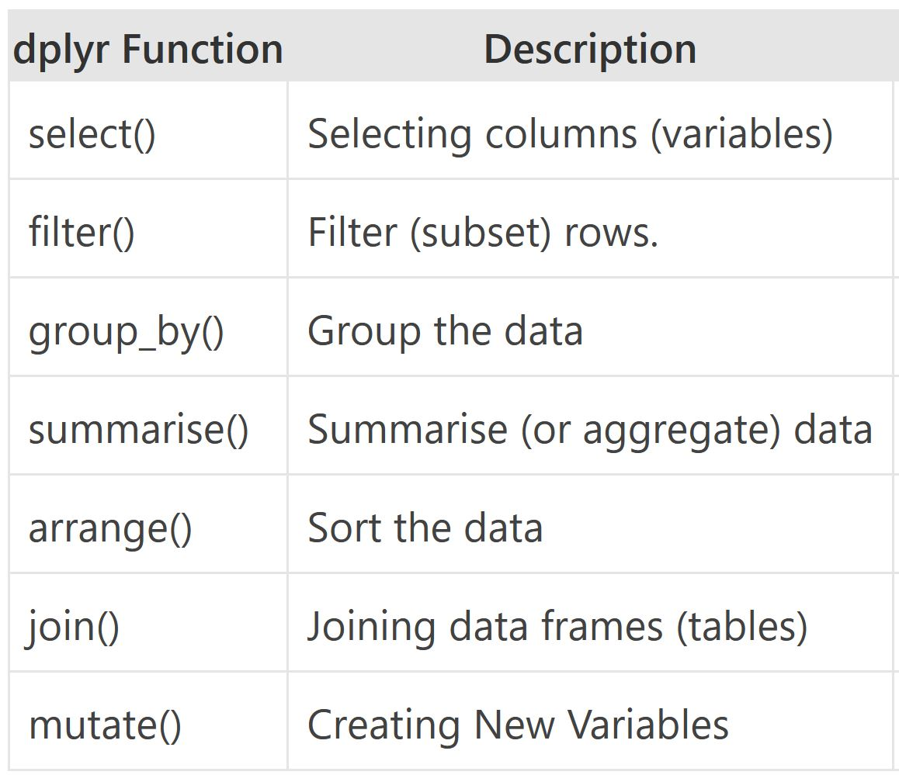
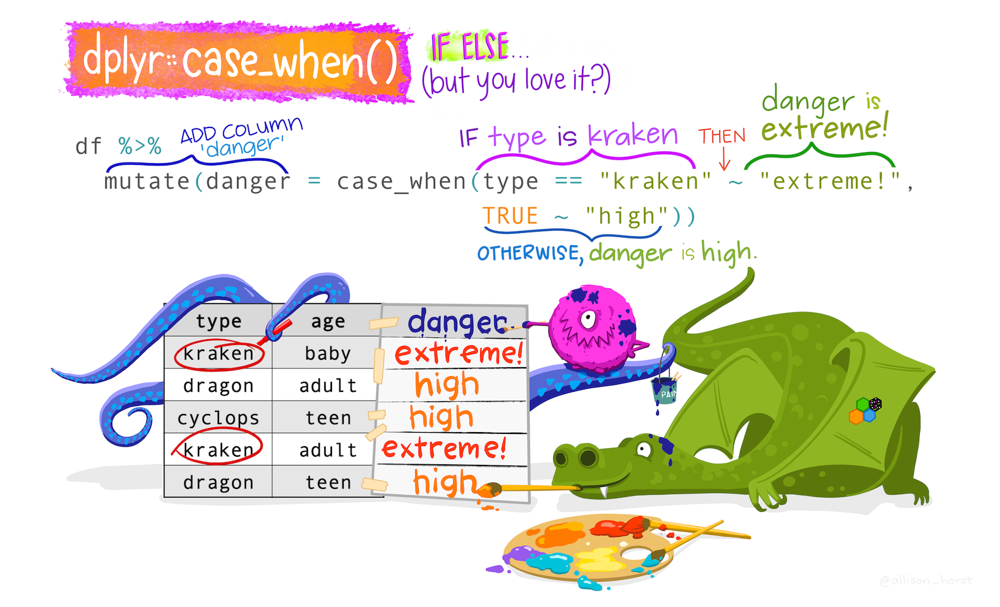

#install.packages("pacman")
pacman::p_load(tidyverse, here)
#tidyverse required for tidy workflows
#rio required for importing and exporting data
#here required for managing file pathsGetting Started with the Data Exploration Pipeline
Set-up
Note
The shortcut for code commenting is Ctrl+Shift+C.
Load Data
The dataset we will be working with has been cleaned (to an extent) for the purposes of this workshop. It is a dataset about NHANES that has been took from the
NHANESand cleaned up and modified for our use.
# Check the file path
here::here("data", "nhanes_basic_info.csv")[1] "D:/websites/r4hta_india/data/nhanes_basic_info.csv"# Read Data
df <- read_csv(here("data", "nhanes_basic_info.csv"))Try the following functions using tb as the argument:
glimpse()head()names()
Now, we will be introducing you to two new packages:
dplyrskimrDataExplorer
dplyr Package
The dplyr is a powerful R-package to manipulate, clean and summarize unstructured data. In short, it makes data exploration and data manipulation easy and fast in R.

There are many verbs in dplyr that are useful, some of them are given here…


Getting used to the pipe |> or %>%

Note
The pipe |> means THEN…
The pipe is an operator in R that allows you to chain together functions in dplyr.
Let’s find the bottom 50 rows of tb without and with the pipe.
Tips The native pipe |> is preferred.
#without the pipe
tail(df, n = 50)
#with the pipe
df |> tail(n = 50)Now let’s see what the code looks like if we need 2 functions. Find the unique age in the bottom 50 rows of df
#without the pipe
unique(tail(df, n = 50)$age)
# with the pipe
df |>
tail(50) |>
distinct(age)Note
The shortcut for the pipe is Ctrl+Shift+M
You will notice that we used different functions to complete our task. The code without the pipe uses functions from base R while the code with the pipe uses a mixture (tail() from base R and distinct() from dplyr). Not all functions work with the pipe, but we will usually opt for those that do when we have a choice.
distinct() and count()
The distinct() function will return the distinct values of a column, while count() provides both the distinct values of a column and then number of times each value shows up. The following example investigates the different race (race) in the df dataset:
df |>
distinct(race)
df |>
count(race)Notice that there is a new column produced by the count function called n.
arrange()
The arrange() function does what it sounds like. It takes a data frame or tbl and arranges (or sorts) by column(s) of interest. The first argument is the data, and subsequent arguments are columns to sort on. Use the desc() function to arrange by descending.
The following code would get the number of times each race is in the dataset:
df |>
count(race) |>
arrange(n)
# Since the default is ascending order,
# we are not getting the results that are probably useful,
# so let's use the desc() function
df |>
count(race) |>
arrange(desc(n))
# shortcut for desc() is -
df |>
count(race) |>
arrange(-n)filter()
If you want to return rows of the data where some criteria are met, use the filter() function. This is how we subset in the tidyverse. (Base R function is subset())

Here are the logical criteria in R:
==: Equal to!=: Not equal to>: Greater than>=: Greater than or equal to<: Less than<=: Less than or equal to
If you want to satisfy all of multiple conditions, you can use the “and” operator, &.
The “or” operator | (the vertical pipe character, shift-backslash) will return a subset that meet any of the conditions.
Let’s see all the data for age 60 or above
df |>
filter(age >= 60)Let’s just see data for white
df |>
filter(race == "White")Both White and age 60 or more
df_60_plus_white <- df |>
filter(age >= 60 & race == "White")%in%
To filter() a categorical variable for only certain levels, we can use the %in% operator.
Lets check which are the race groups that are in the dataset.
df |>
select(race) |>
unique()# A tibble: 5 × 1
race
<chr>
1 White
2 Mexican
3 Hispanic
4 Other
5 Black Now we’ll create a vector of races we are interested in
others <- c("Mexican",
"Hispanic",
"Other")And use that vector to filter() df for races %in% minority
df |>
filter(race %in% others)You can also save the results of a pipeline. Notice that the rows belonging to minority races are returned in the console. If we wanted to do something with those rows, it might be helpful to save them as their own dataset. To create a new object, we use the <- operator.
others_df <- df |>
filter(race %in% others)drop_na()
The drop_na() function is extremely useful for when we need to subset a variable to remove missing values.
Return the NHANES dataset without rows that were missing on the education variable
df |>
drop_na(education)Return the dataset without any rows that had an NA in any column. *Use with caution because this will remove a lot of data
df |>
drop_na()select()
Whereas the filter() function allows you to return only certain rows matching a condition, the select() function returns only certain columns. The first argument is the data, and subsequent arguments are the columns you want.
See just the country, year, incidence_100k columns
# list the column names you want to see separated by a comma
df |>
select(id, age, education)Use the - sign to drop these same columns
df |>
select(-age_months, -poverty, -home_rooms)select() helper functions
The starts_with(), ends_with() and contains() functions provide very useful tools for dropping/keeping several variables at once without having to list each and every column you want to keep. The function will return columns that either start with a specific string of text, ends with a certain string of text, or contain a certain string of text.
# these functions are all case sensitive
df |>
select(starts_with("home"))
df |>
select(ends_with("t"))
df |>
select(contains("_"))
# columns that do not contain -
df |>
select(-contains("_"))summarize()
The summarize() function summarizes multiple values to a single value. On its own the summarize() function doesn’t seem to be all that useful. The dplyr package provides a few convenience functions called n() and n_distinct() that tell you the number of observations or the number of distinct values of a particular variable.
Note summarize() is the same as summarise()
Notice that summarize takes a data frame and returns a data frame. In this case it’s a 1x1 data frame with a single row and a single column.
df |>
summarize(mean(age))
# watch out for nas. Use na.rm = TRUE to run the calculation after excluding nas.
df |>
summarize(mean(weight, na.rm = TRUE))The name of the column is the expression used to summarize the data. This usually isn’t pretty, and if we wanted to work with this resulting data frame later on, we’d want to name that returned value something better.
df |>
summarize(mean_age = mean(age, na.rm = TRUE))group_by()
We saw that summarize() isn’t that useful on its own. Neither is group_by(). All this does is takes an existing data frame and converts it into a grouped data frame where operations are performed by group.
df |>
group_by(gender)
df |>
group_by(gender, race)group_by() and summarize() together
The real power comes in where group_by() and summarize() are used together. First, write the group_by() statement. Then pipe the result to a call to summarize().
Let’s summarize the mean incidence of tb for each year
df |>
group_by(race) |>
summarize(mean_height = mean(height, na.rm = TRUE))
#sort the output by descending mean_inc
df |>
group_by(race) |>
summarize(mean_height = mean(height, na.rm = TRUE))|>
arrange(desc(mean_height))mutate()
Mutate creates a new variable or modifies an existing one.

Lets create a column called elderly if the age is greater than or equal to 65.
df |>
mutate(elderly = if_else(
age >= 65,
"Yes",
"No"))The same thing can be done using case_when().
df |>
mutate(elderly = case_when(
age >= 65 ~ "Yes",
age < 65 ~ "No",
TRUE ~ NA))Lets do it again, but this time let us make it 1 and 0, 1 if age is greater than or equal to 65, 0 if otherwise.
df |>
mutate(old = case_when(
age >= 65 ~ 1,
age < 65 ~ 0,
TRUE ~ NA))
Note
The if_else() function may result in slightly shorter code if you only need to code for 2 options. For more options, nested if_else() statements become hard to read and could result in mismatched parentheses so case_when() will be a more elegant solution.
As a second example of case_when(), let’s say we wanted to create a new income variable that is low, medium, or high.
See the income_hh broken into 3 equally sized portions
quantile(df$income_hh, prob = c(.33, .66), na.rm = T)Note
See the help file for quanile function or type ?quantile in the console.
We’ll say:
- low = 30000 or less
- medium = between 30000 and 70000
- high = above 70000
df |>
mutate(income_cat = case_when(
income_hh <= 30000 ~ "low",
income_hh > 30000 & income_hh <= 70000 ~ "medium",
income_hh > 70000 ~ "high",
TRUE ~ NA)) join()
Typically in a data science or data analysis project one would have to work with many sources of data. The researcher must be able to combine multiple datasets to answer the questions he or she is interested in. Collectively, these multiple tables of data are called relational data because more than the individual datasets, its the relations that are more important.
As with the other dplyr verbs, there are different families of verbs that are designed to work with relational data and one of the most commonly used family of verbs are the mutating joins.
These include:
left_join(x, y)which combines all columns in data framexwith those in data frameybut only retains rows fromx.right_join(x, y)also keeps all columns but operates in the opposite direction, returning only rows fromy.full_join(x, y)combines all columns ofxwith all columns ofyand retains all rows from both data frames.inner_join(x, y)combines all columns present in eitherxorybut only retains rows that are present in both data frames.anti_join(x, y)returns the columns fromxonly and retains rows ofxthat are not present iny.anti_join(y, x)returns the columns fromyonly and retains rows ofythat are not present inx.

Apart from specifying the data frames to be joined, we also need to specify the key column(s) that is to be used for joining the data. Key columns are specified with the by argument, e.g. inner_join(x, y, by = "subject_id") adds columns of y to x for all rows where the values of the “subject_id” column (present in each data frame) match. If the name of the key column is different in both the dataframes, e.g. “subject_id” in x and “subj_id” in y, then you have to specify both names using by = c("subject_id" = "subj_id").
Example
Lets try to join the basic information dataset (nhanes_basic_info.csv) with clinical dataset (nhanes_clinical_info.rds).
basic <- read_csv(
here("data",
"nhanes_basic_info.csv"))Rows: 5679 Columns: 14
── Column specification ────────────────────────────────────────────────────────
Delimiter: ","
chr (7): gender, race, education, marital_status, home_own, work, bmi_who
dbl (7): unique_id, age, income_hh, poverty, home_rooms, height, weight
ℹ Use `spec()` to retrieve the full column specification for this data.
ℹ Specify the column types or set `show_col_types = FALSE` to quiet this message.clinical <- read_rds(
here("data",
"nhanes_clinical_info.rds"))
df <- basic |>
left_join(clinical)Joining with `by = join_by(unique_id)`Try to join behaviour dataset (nhanes_behaviour_info.rds).
pivot()
Most often, when working with our data we may have to reshape our data from long format to wide format and back. We can use the pivot family of functions to achieve this task. What we mean by “the shape of our data” is how the values are distributed across rows or columns. Here’s a visual representation of the same data in two different shapes:

“Long” format is where we have a column for each of the types of things we measured or recorded in our data. In other words, each variable has its own column.
“Wide” format occurs when we have data relating to the same measured thing in different columns. In this case, we have values related to our “metric” spread across multiple columns (a column each for a year).
Let us now use the pivot functions to reshape the data in practice. The two pivot functions are:
pivot_wider(): from long to wide format.pivot_longer(): from wide to long format.

Lets try pivot_longer. Suppose we need a long data format for the bp_sys and bp_sys_post variables:
df_long <- df |>
pivot_longer(
cols = c(bp_sys, bp_sys_post),
names_to = "bp_sys_cat",
values_to = "bp_value")Lets try pivot_wider. Suppose we need a wide data format for height variable based on race variable.
df_wider <- df |>
pivot_wider(names_from = "race",
values_from = "height",
names_prefix = "height_")Resources for learning more dplyr
Check out the Data Wrangling cheatsheet that covers dplyr and tidyr functions.(https://rstudio.com/wp-content/uploads/2015/02/data-wrangling-cheatsheet.pdf)
Review the Tibbles chapter of the excellent, free R for Data Science book.(https://r4ds.had.co.nz/tibbles.html)
Check out the Transformations chapter to learn more about the dplyr package. Note that this chapter also uses the graphing package ggplot2 which we have covered yesterday.(https://r4ds.had.co.nz/transform.html)
Check out the Relational Data chapter to learn more about the joins.(https://r4ds.had.co.nz/relational-data.html)
skimr Package
skimr is designed to provide summary statistics about variables in data frames, tibbles, data tables and vectors. The core function of skimr is the skim() function, which is designed to work with (grouped) data frames, and will try coerce other objects to data frames if possible.

Give skim() a try.
df |>
skimr::skim()Check out the names of the output of skimr
df |>
skimr::skim() |>
names()Also works with dplyr verbs
df |>
group_by(race) |>
skimr::skim()df |>
skimr::skim() |>
dplyr::select(skim_type, skim_variable, n_missing)DataExplorer Package
The DataExplorer package aims to automate most of data handling and visualization, so that users could focus on studying the data and extracting insights.1

The single most important function from the DataExplorer package is create_report()
Try it for yourself.
pacman::p_load(DataExplorer)
create_report(df)